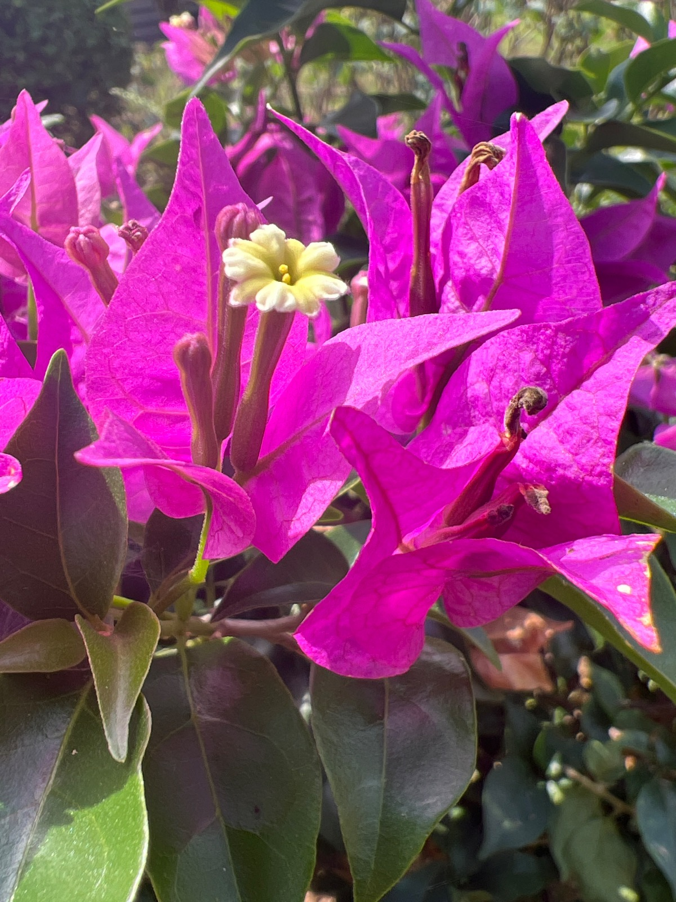
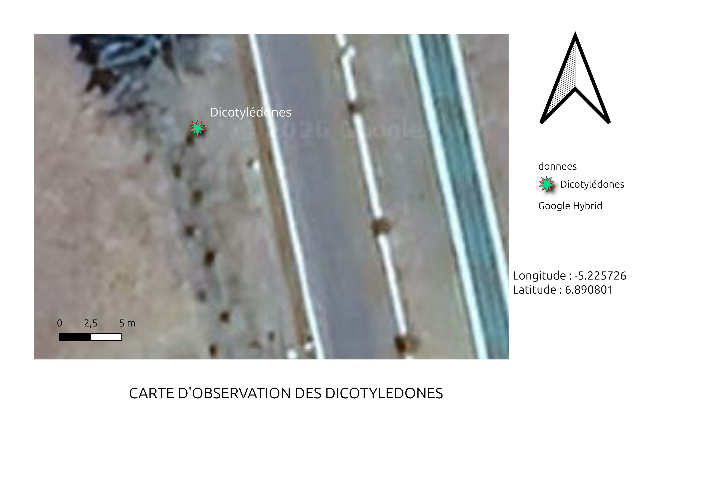

Le problème résolu : mieux polliniser
Fleurs colorées, parfumées et riches en nectar attirent les insectes, qui transportent le pollen d'une fleur à l'autre. La graine est protégée dans un fruit, souvent charnu. Aujourd'hui on parle d'eudicotylédones : sachez expliquer pourquoi à l'oral.

Dicotylédones : l'alliance avec les insectes
Reproduction
Le cacaoyer est pollinisé par de minuscules moucherons (Forcipomyia) qui se reproduisent dans les débris humides au sol.


Observé sur le terrain
E10-04 | Dicotylédones | inconnue | Trouvé | -5.225726 | 6.890801 | 3 | 2026-11-21 11:17:18 | sec |